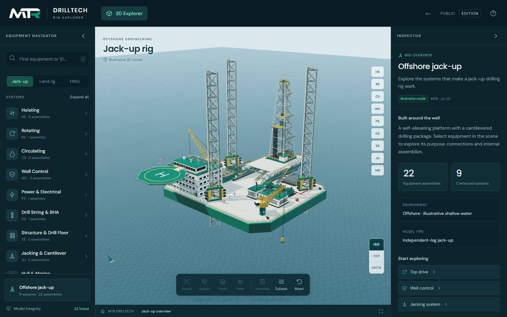
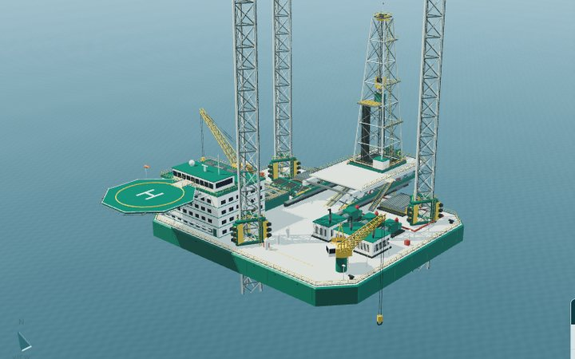
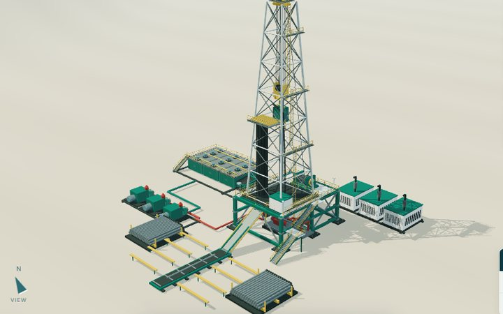
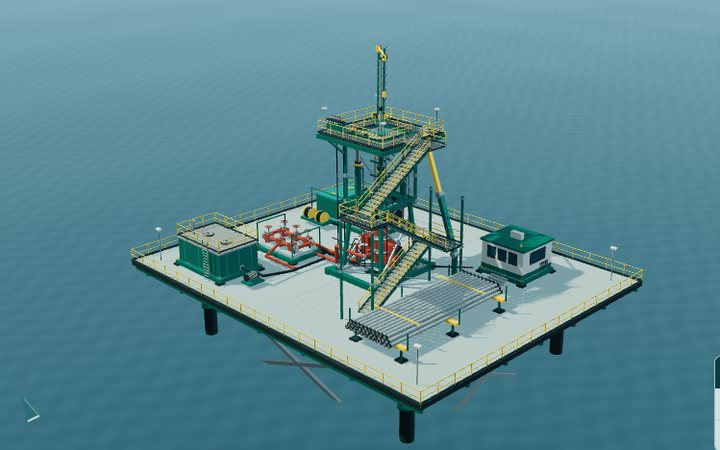

An interactive 3D rig explorer built for Master Team Resources, a Kuala Lumpur crewing and safety-training company working the oil, gas and energy sector. Three rigs, fifty equipment assemblies. Orbit the rig, click a drawworks or a blowout preventer, and read what it does, what it touches and what can hurt you around it.


A self-elevating platform with a cantilevered drilling package: three lattice legs and spudcans, the jacking house, hull and main deck, derrick, drill floor, mud pumps and tanks, the BOP stack, cranes, helideck and lifeboats.

The same drilling package on the ground: a steel substructure over the cellar, skid-mounted mud pumps and tanks, generator sets, the pipe rack and the ramp that feeds pipe up to the drill floor.

A different machine altogether. Instead of a mast and drawworks, hydraulic jack cylinders and two sets of slips walk jointed pipe in and out of a live well, with a workbasket, pressure-control stack and power pack around them.
The explorer is hand-written HTML, CSS and ES modules with Three.js and OrbitControls bundled locally. There is no framework, no bundler and no build step: the files you load are the files that were authored. Every rig is modelled from primitives in code rather than imported from a scan or a marketplace asset, so the whole thing is original work.
What this is and is not. All three rigs are original illustrative training assemblies, not surveyed digital twins of any particular vessel or unit. Layouts, proportions and connections are conceptual; manufacturer names, rated capacities and dimensions are deliberately left unfilled rather than guessed. The safety notes are hazard-awareness topics for orientation, never an operating sequence, a risk assessment, a certification or a well-control plan. Master Team Resources Sdn Bhd (1041387-W) supplies crews, training and safety consulting; nothing here implies that MTR owns or operates the rigs represented. The public edition on this site carries the 3D models only — the June 2026 planning records that the internal build reads are not published here.